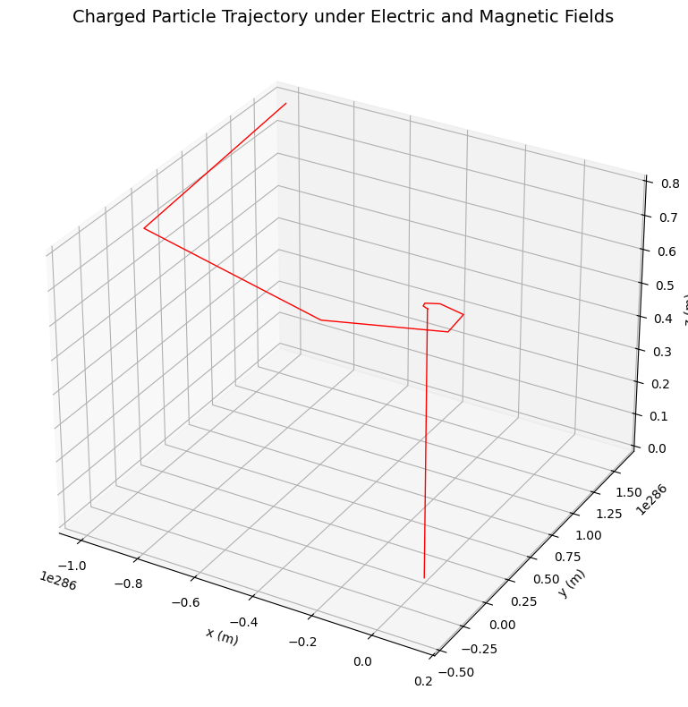
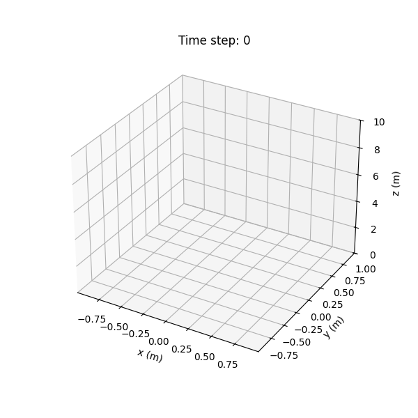
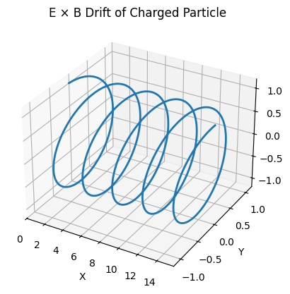
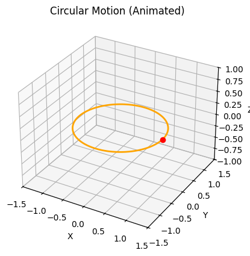
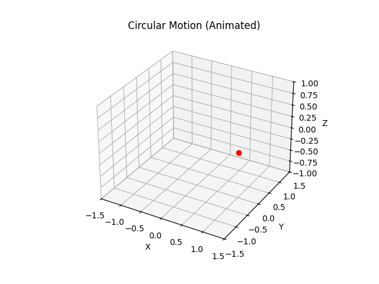
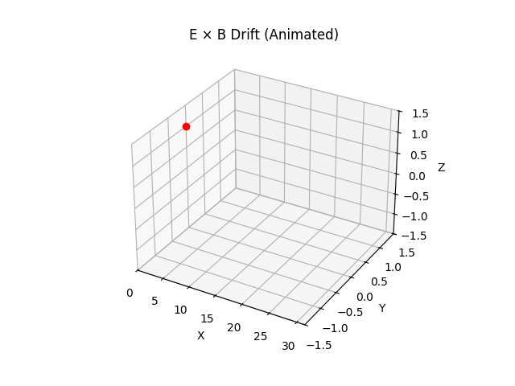

Problem 1
Electromagnetism: Lorentz Force Simulation
1. Motivation
Charged particles in electric and magnetic fields experience the Lorentz force, given by:
This force dictates the motion of particles in systems such as:
- Particle accelerators (e.g., cyclotrons),
- Mass spectrometers,
- Plasma confinement in fusion reactors,
- The Earth's magnetosphere affecting solar wind particles.
Understanding this force through simulation helps us visualize phenomena such as helical motion, circular orbits, and drift velocities.
2. Problem Statement
We will simulate and visualize the trajectory of a charged particle moving under:
- Only a magnetic field (circular or helical motion),
- Only an electric field (linear acceleration),
- Both fields simultaneously (complex motion: drift, helical).
3. Simulation Setup
The equation of motion under Lorentz force is:
We will use the Euler method to integrate the equations numerically.
4. Python Code for Google Colab
import numpy as np
import matplotlib.pyplot as plt
from mpl_toolkits.mplot3d import Axes3D
# --- Constants ---
q = 1.6e-19 # Charge of the particle (Coulombs)
m = 9.11e-31 # Mass of electron (kg)
# --- Fields ---
E = np.array([0.0, 0.0, 1e5]) # Electric field (V/m)
B = np.array([0.0, 0.0, 1.0]) # Magnetic field (T)
# --- Initial Conditions ---
r0 = np.array([0.0, 0.0, 0.0]) # Initial position (m)
v0 = np.array([1e6, 0.0, 0.0]) # Initial velocity (m/s)
# --- Time Parameters ---
dt = 1e-11 # Time step (s)
steps = 5000 # Number of iterations
# --- Arrays for position and velocity ---
r = np.zeros((steps, 3))
v = np.zeros((steps, 3))
r[0] = r0
v[0] = v0
# --- Time Integration using Euler method ---
for i in range(1, steps):
F = q * (E + np.cross(v[i-1], B))
a = F / m
v[i] = v[i-1] + a * dt
r[i] = r[i-1] + v[i] * dt
# --- Plotting the 3D trajectory ---
fig = plt.figure(figsize=(10, 8))
ax = fig.add_subplot(111, projection='3d')
ax.plot(r[:, 0], r[:, 1], r[:, 2], color='red', linewidth=1)
ax.set_title('Charged Particle Trajectory under Electric and Magnetic Fields', fontsize=14)
ax.set_xlabel('x (m)')
ax.set_ylabel('y (m)')
ax.set_zlabel('z (m)')
plt.tight_layout()
plt.show()

5. Analysis of the Result
Depending on the configuration of the fields:
- Only magnetic field ⇒ Circular or helical motion.
- Only electric field ⇒ Linear acceleration.
- Crossed fields ⇒ Drift in the perpendicular direction (e.g., E × B drift).
This simulation demonstrates a helical path: the electric field causes linear acceleration along the \(z\)-axis, while the magnetic field forces the particle into circular motion in the \(x\)-\(y\) plane.
6. Adding Visualization as a GIF (Bonus)
Colab'ta çalıştırmak için:
import matplotlib.animation as animation
fig = plt.figure(figsize=(6, 6))
ax = fig.add_subplot(111, projection='3d')
def update(num):
ax.clear()
ax.plot(r[:num, 0], r[:num, 1], r[:num, 2], color='purple')
ax.set_xlim([np.min(r[:, 0]), np.max(r[:, 0])])
ax.set_ylim([np.min(r[:, 1]), np.max(r[:, 1])])
ax.set_zlim([np.min(r[:, 2]), np.max(r[:, 2])])
ax.set_title(f'Time step: {num}')
ax.set_xlabel('x (m)')
ax.set_ylabel('y (m)')
ax.set_zlabel('z (m)')
ani = animation.FuncAnimation(fig, update, frames=range(0, steps, 50), interval=20)
from IPython.display import HTML
HTML(ani.to_jshtml())
  
 
7. Real-World Applications
| System | Use of Lorentz Force |
|---|---|
| Cyclotron | Accelerates particles in a circular path |
| Mass Spectrometer | Sorts particles by charge/mass ratio |
| Tokamak Fusion Core | Confinement of hot plasma using \(B\) field |
| Van Allen Belts | Trapping of solar wind particles around Earth |
8. Further Enhancements
- Add non-uniform fields.
- Use Runge-Kutta for higher accuracy.
- Simulate relativistic speeds.
- Introduce collisions or damping.